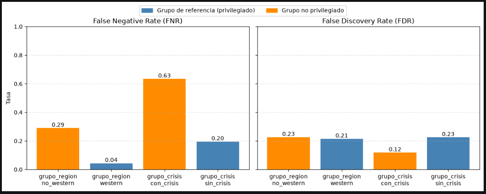

La base de datos "CIRI Human Rights Dataset", contiene información gubernamental de 202 países acerca de 15 derechos humanos internacionalmente respetado Está diseñado para que académicos y estudiantes cuestionen teorías sobre las causas y consecuencias de la violación a los derechos humanos, así como para que creadores de políticas y analistas que deseean estimar los efectos que han tenido los derechos humanos en una amplia variedad de cambios institucionales y políticas públicas, incluyendo la democratización, ayudas económicas, ayuda militar, ajuste estructural, e intervención humanitaria. La creación de la base de datos y la documentación fue apoyada por "National Science Foundation", la cual es una agencia independiente del gobierno federal de los Estados Unidos que asiste en la investigación y educación en todas los campos no medicos de la ciencia y la ingeneria.

Entrenamos un árbol de decisión para predecir Freedom of Religion (New)
FNR: 0,043 en western contra 0,290 en no_western, disparidad 6,66. No hay paridad. Un país no western que sí respeta plenamente la libertad religiosa tiene casi 7 veces más probabilidad de ser clasificado como violador.
FNR: 0,195 en sin_crisis contra 0,634 en con_crisis, disparidad 3,25. No hay paridad. Casi dos de cada tres país-años de países con historia de crisis que sí respetan la libertad religiosa fueron clasificados como violadores.
Tampoco basta con eliminar los atributos sensibles ya que igual que COMPAS, que no utilizaba raza, nuestro modelo no usa ni la región ni la crisis, pero los demás derechos funcionan como pistas hacia aquellos grupos.
Las métricas miden qué tan justo es el modelo respecto a lo codificado por CIRI, y no toman en cuenta casos reales. Si la fuente de información proviene de alguien más benévolo con países "western", entonces el modelo heredará esta ventaja.
Un modelo entrenado con estos puntajes hereda los sesgos de la fuente y puede terminar prediciendo mejor la visibilidad de una violación que la violación misma. Por eso, más que cuánto acierta, lo importante es para quién se equivoca.
En el Taller IV generamos datos sintéticos, que no conservan bien las distribuciones originales y muestran las violaciones de DD.HH. como más frecuentes de lo que realmente son. Aun así, el conjunto sintético puede ayudar a que las organizaciones desarrollen herramientas sin exponer a víctimas ni fuentes, mientras que las cifras públicas deberían provenir de los datos reales.
Cingranelli, D. L., Richards, D. L., & Clay, K. C. (s.f.). Frequently asked questions. CIRI Human Rights Data Project. http://www.humanrightsdata.com/p/faq.html
Saleiro, P., et al. (2018). Aequitas: A bias and fairness audit toolkit (arXiv:1811.05577). https://arxiv.org/abs/1811.05577